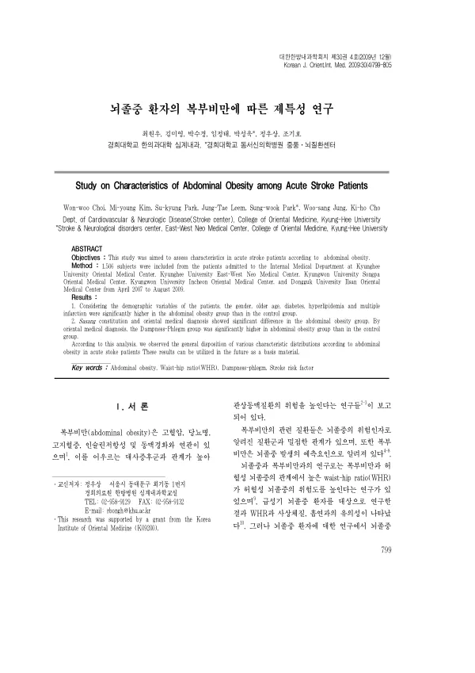

뇌졸중 환자의 복부비만에 따른 제특성 연구
Choi Ww, Kim My, Park Sk, Leem Jt, Park Sw, Jung Ws, Cho Kh
The Journal of Internal Korean Medicine 30(4):799-805

첫 장 · 오픈액세스First page · open access
논문 소개Summary
뇌졸중 환자의 복부비만에 따라 어떤 특성이 갈리는지 살핀 다기관 연구입니다. 한의학에는 「비인다중풍」이라는 말이 있어 비만과 중풍의 연관을 오래 언급해 왔습니다. 2007년 4월부터 2009년 8월까지 다섯 개 한방병원에 입원한 1,506명 가운데 허리엉덩이둘레비가 측정된 1,050명이 분석에 들어갔습니다. 복부비만군은 대조군보다 성별과 높은 연령, 당뇨, 고지혈증, 다발성 경색의 비율이 유의하게 높았습니다. 사상체질과 한의 변증에서도 차이가 나타났는데, 변증으로는 습담군이 복부비만군에서 유의하게 많았습니다. 단면 자료로 분포를 살핀 연구이므로 인과로 읽을 수 없고, 저자들도 이 결과를 기초자료로 규정했습니다.
A multicentre study of how characteristics differ with abdominal obesity in stroke patients. Korean medicine has long noted a connection between obesity and stroke in the saying that stout people suffer more strokes. Of 1,506 patients admitted to five Korean medicine hospitals between April 2007 and August 2009, the 1,050 whose waist-hip ratio was measured entered the analysis. The abdominally obese group had significantly higher rates of sex, older age, diabetes, hyperlipidaemia and multiple infarction than controls. Differences also appeared in Sasang constitution and pattern identification, with the dampness-phlegm group significantly more frequent among the abdominally obese. As a cross-sectional examination of distributions, it cannot be read causally, and the authors themselves define the findings as baseline material.
인용Cite
Choi Ww, Kim My, Park Sk, Leem Jt, Park Sw, Jung Ws, Cho Kh. 뇌졸중 환자의 복부비만에 따른 제특성 연구. The Journal of Internal Korean Medicine. 2009;30(4):799-805.